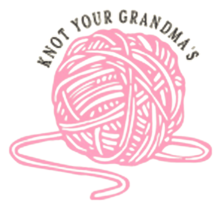
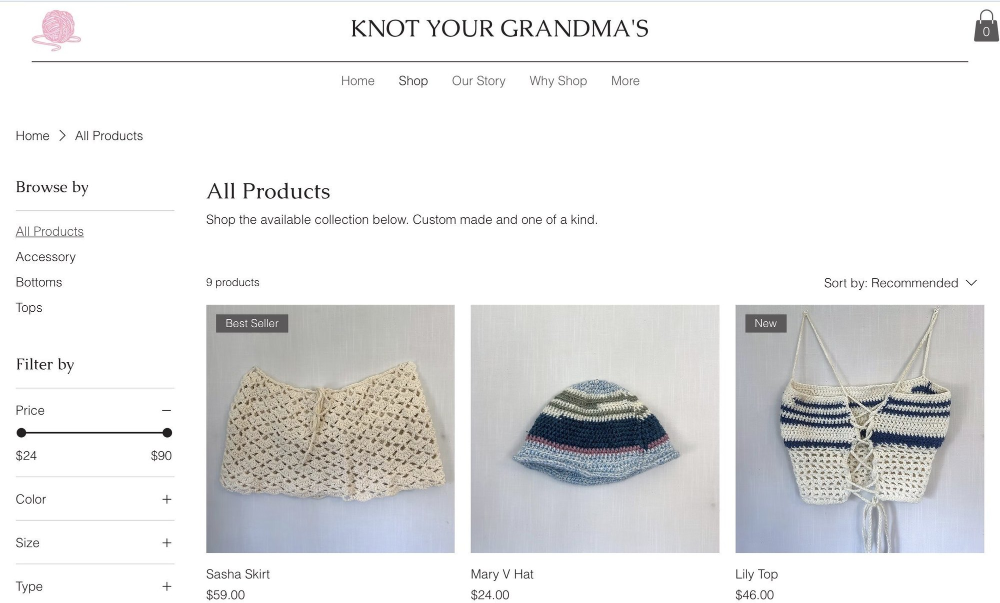
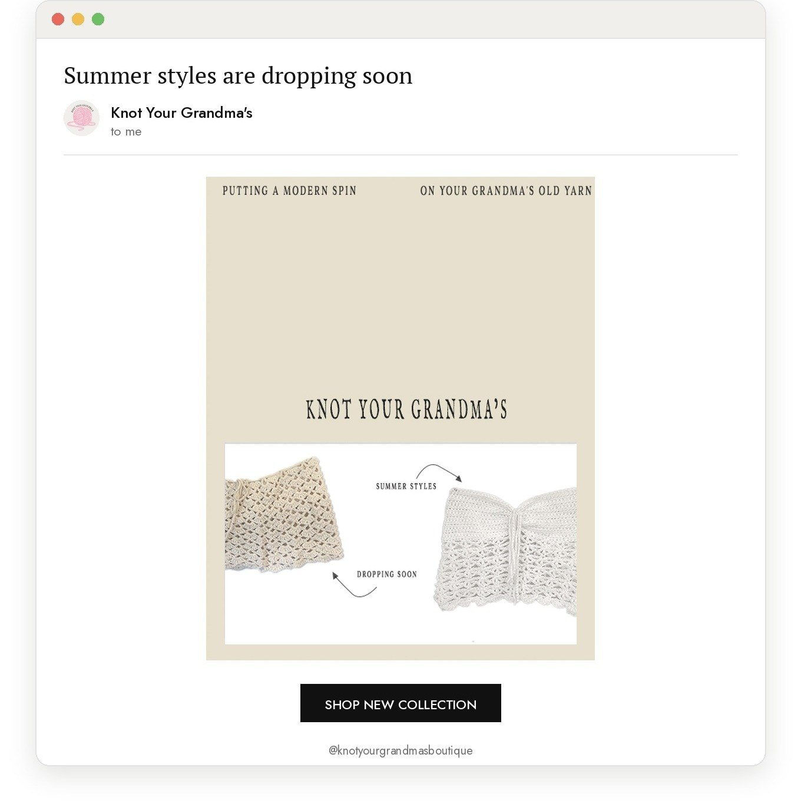
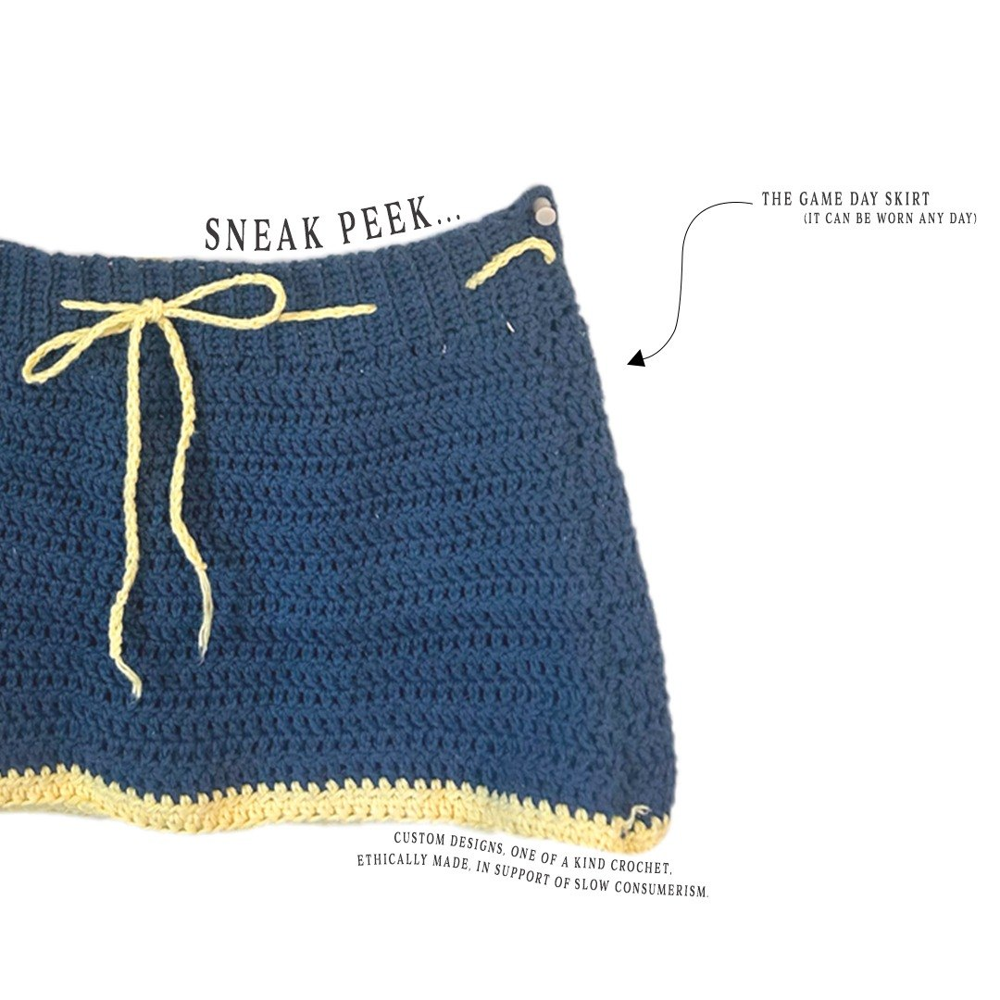
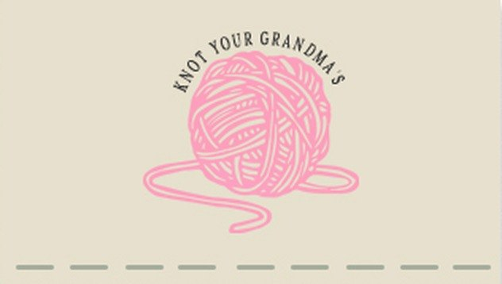
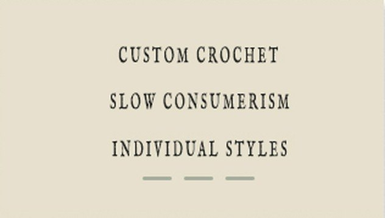

E-commerce brand · Co-founder · April–May 2024


Knot Your Grandma's is a crochet apparel brand I co-founded with a friend while at the University of Michigan. I shaped the brand end to end, from the identity and website to social, email, and print, all built around slow fashion and clothing made ethically and locally.

Brand direction was spun up from the product itself. I created a collection of marketing material that stayed close to the product's identity.

